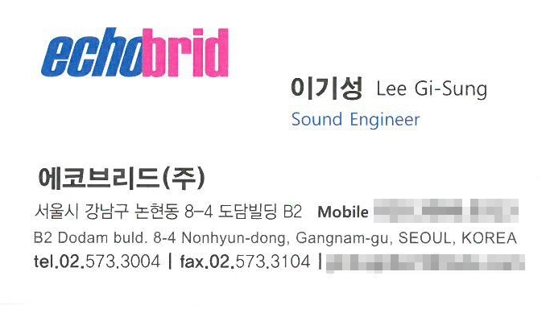

추계 예술 대학교
실용음악학과 음향 전공 학사 졸업
2007~2010
Profile
음향 전공을 기반으로 녹음실, 콘서트, 뮤지컬, 대학 출강 등 폭넓은 현장에서 축적한 경험과 지식을 바탕으로 각 공간과 목적에 맞는 최적의 음향 시스템 세팅과 컨설팅을 제공합니다.
Career
실용음악학과 음향 전공 학사 졸업
2007~2010

레코딩 엔지니어
2008~2010
교회, 카페, 교육장, 공연장 등 설치 음향 개선 이력을 정리하세요.
기간 입력